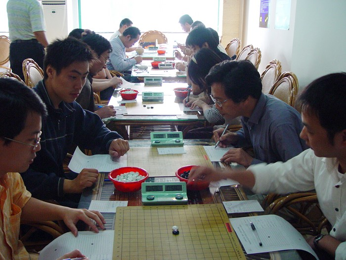
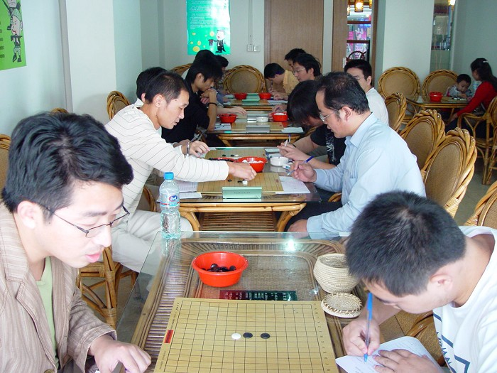
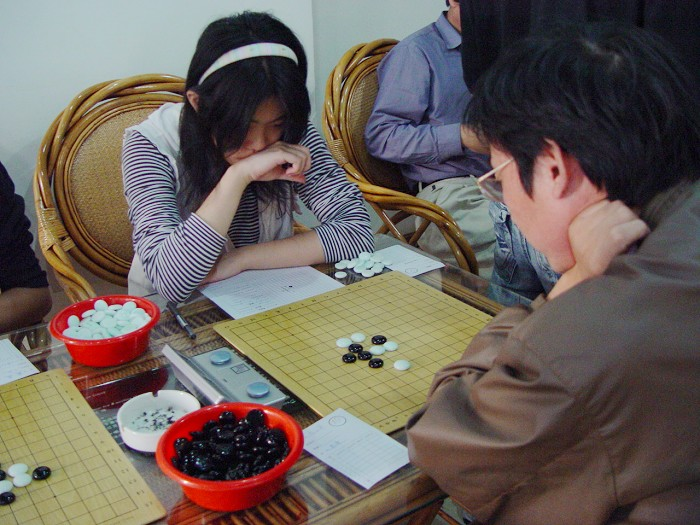

南通五子棋选手参加上海“金秋群英杯”活动
#1 南通五子棋选手参加上海“金秋群英杯”活动 作者：有志青年 发表时间：2006-10-6 12:01:30
时间：10月4日凌晨5点起床，6点于长途车站集中
人员：痞子蔡，江风，锈刀，小包，路程，我携老婆孩子
抵达：约3小时的长途车程，之后转乘地铁抵达活动地点约10点20左右
活动：上海组织负责人顾炜、黄民城向南通选手等介绍了上海五子棋10年来的发展情况，双方就两地组织的进一步发展进行了充分探讨。陈有志代表南通五子棋组织向上海赠送了礼物。黄民城代表上海五子棋委员会回赠了相关五子棋书籍、杂志。
比赛：全体南通选手均是第一次正式参加比赛，赛前，黄民城老师耐心的向南通选手介绍了比赛常识，在后面的第一轮比赛中，上海选手不厌其烦的指导记谱、打钟等常识性的内容。
过程：
共14人参加了比赛，分为7轮，积分制，4日中午10：30开始了第一轮，痞子蔡和锈刀战胜了对手，其余三位选手均负，
中午在外简单的吃了点东西之后，下午1点继续开战，
到晚上5点30结束，出去吃了点面条，回到场地继续开战，
直到夜里9点才结束，回到旅馆后，五名参赛选手均强烈表示收获很大很大！回到南通后一定要定期举行类似比赛，在高强度的比赛中进步很大！
第二天的比赛从上午10点开始，下午约3点左右结束。
最终，蔡力捷四段凭借小分优势艰难夺冠。吴杰三段虽然大分和蔡力捷相同，但小分略低屈居亚军。新会员吴恺和顾炜七段并列第三。南通选手蔡仕军在最后一轮击败顾炜，获得第五。
名言：痞子蔡“通过这次比赛，我知道，我不是一点机会都没有的”
锈刀“回去我要看书，完全考算力，还是有差距的”
小包“虽然了解一些开局，但是没有研究，到了比赛总归信心不足”
让我们借此次比赛，让南通的选手，有更大的进步！
#2 Re:南通五子棋选手参加上海“金秋群英杯”活动 作者：天堂的银元 发表时间：2006-10-6 12:13:19
恭喜南通选手在此次比赛中取得优异的成绩。
#3 Re:Re:南通五子棋选手参加上海“金秋群英杯”活动 作者：有志青年 发表时间：2006-10-6 12:22:28


#4 Re:南通五子棋选手参加上海“金秋群英杯”活动 作者：娅娅 发表时间：2006-10-7 18:33:29
有志老师,那个美女棋手是谁哦~~~~~```#5 Re:南通五子棋选手参加上海“金秋群英杯”活动 作者：有志青年 发表时间：2006-10-12 13:37:23
美女棋手是上海的，才上高三哟，实力很强的！#6 Re:南通五子棋选手参加上海“金秋群英杯”活动 作者：唐溧嫔 发表时间：2007-7-15 13:54:04
真不错！！能参加！！
#7 Re:南通五子棋选手参加上海“金秋群英杯”活动 作者：黄药师 发表时间：2007-7-15 15:05:18
上海帮贼猛～～～～～
#8 Re:南通五子棋选手参加上海“金秋群英杯”活动 作者：yidefei 发表时间：2007-7-16 10:32:25
啥时我也去转转